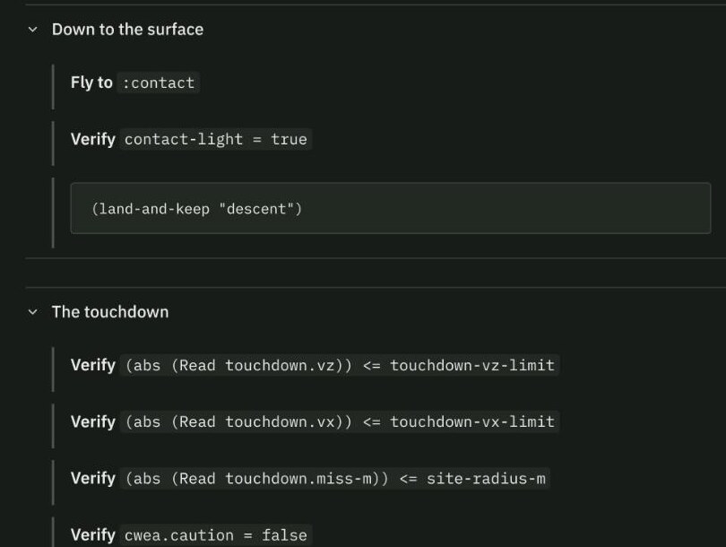
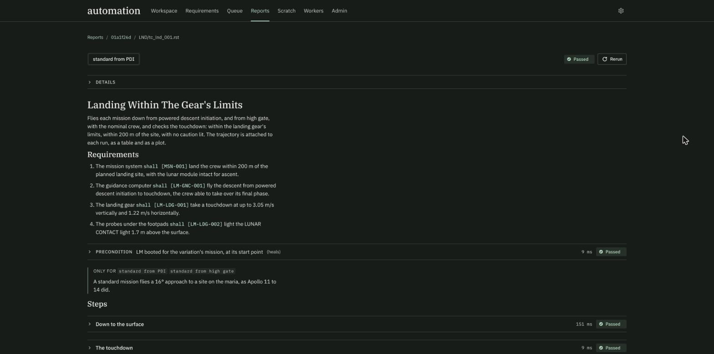
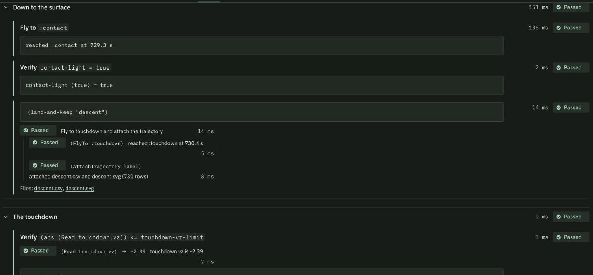
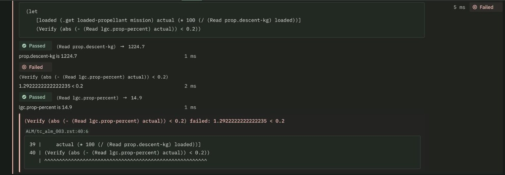
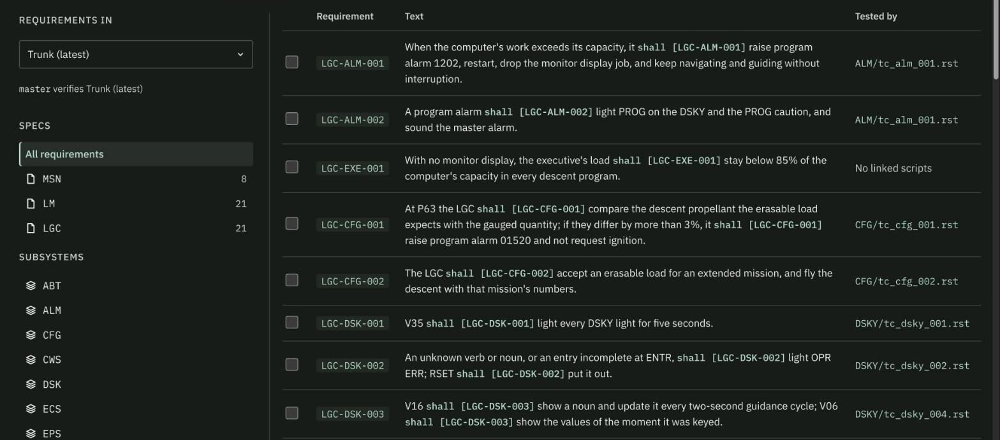
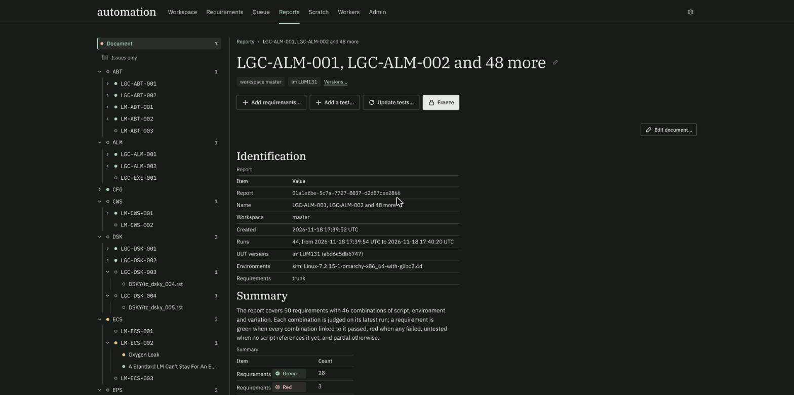
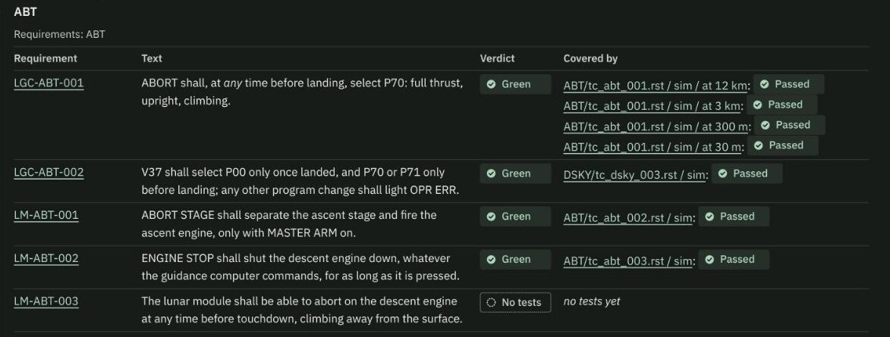
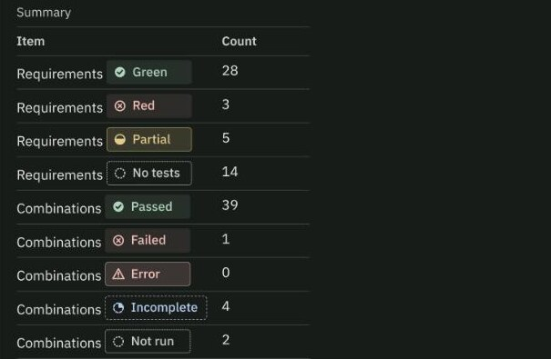

The problem
Our scripts today are lines of shell words. That makes them:
- Hard to maintain: no names for values, no way to reuse steps; another configuration means copy and paste
- Hard to read: the intent lives in comments, if anywhere
- Big and coupled: starting the system is expensive, so each script tests everything it can, and one failure hides what still passes
- Hard to read back: walls of output to find a failure in, and fixed reports
automation-v3: scripts are readable documents in a small language, and every result rolls up to the requirement it verifies.
A step per line…
StartLM standard pdi
FlyTo contact
Verify lm.contact = true
Verify lm.touchdown.vz <= 3.05
- The first word names the block
- The rest is split like a shell command and handed over as strings
…becomes a form per step
(StartLM {:mission :standard :start :pdi})
(FlyTo :contact)
(Verify contact-light = true)
(Verify touchdown.vz <= 3.05)
- Same shape: the block first, then its arguments, in parentheses
- Arguments are typed values: numbers, keywords, booleans, times like
15min, maps - Calls are checked before anything runs
Name it once: def
Before: the same number in every script
Verify lm.touchdown.vz <= 3.05
…
Verify lm.touchdown.vz <= 3.05
…
Verify lm.touchdown.vz <= 3.5
After: defined once, in core.rst
(def touchdown-vz-limit 3.05)
(def full-throttle 92.5)
(Verify touchdown.vz <= touchdown-vz-limit)
- One place to change; the name says what the number is
- A misspelled name is an error before the run, not a different number
- The main reason for the new syntax
Group steps: defn
;; core.rst
(defn boot-and-release [mission start]
(StartLM {:mission mission :start start})
(Wait lm.mode = :wait-for-release :within 30s)
(ReleaseLM))
;; a script
(boot-and-release :standard :high-gate)
(FlyTo :touchdown)
(Verify touchdown.vz <= touchdown-vz-limit)
- Steps every script repeats become one named call
- The script reads as what it means: boot, fly, check
- Written by script writers, in the script language; the blocks inside still report one by one
A script is a document

The workspace: pick a script, read it rendered, edit it a card at a time, run it
Up close: the script
Prose says what is tested and why; the requirements it verifies are cited

Steps render as readable lines: (FlyTo :contact) becomes Fly to :contact
A run is the script, with results

The run page is the same document, with a result on every precondition and step
Up close: what each step did

Each block shows its result and what it saw: contact-light (true) = true; a defn's blocks are listed under the step that called it
Up close: a failure

The failing check, the values it read, and the line it came from. The steps after it say Not run, not failed
Requirements, and what tests them

Imported requirements, by spec and subsystem, each with the scripts that cite it. Pick requirements to queue every script that tests them
A report rolls up to requirements

A report collects runs for the versions under test, grouped by requirement
Up close: requirement by requirement

Each requirement, its verdict, and every script, environment and variation that covers it, linked to its run
Up close: the verdicts

- A requirement is green when everything linked to it passed, red when anything failed, partial otherwise
- Requirements no script cites yet show as no tests: the gaps are visible too
- Each combination of script, environment and variation is judged on its latest run